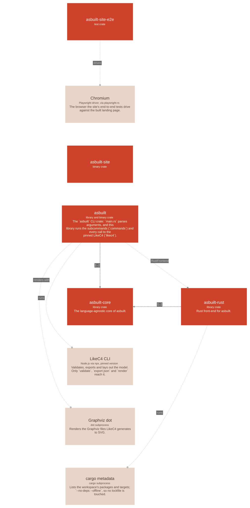

asbuilt

Containers
| Name | Technology | Description |
|---|---|---|
| asbuilt | library crate | The library half of the |
| asbuilt-core | library crate | The language-agnostic core of asbuilt. |
| asbuilt-rust | library crate | Rust front-end for asbuilt. |
| asbuilt-site | binary | |
| asbuilt-site-e2e | test crate |
Externals
| Name | Kind | Technology | Description | Used by |
|---|---|---|---|---|
| cargo metadata | process | cargo subprocess | Lists the workspace's packages and targets; | asbuilt_rust.discover (uses: runs) |
| Chromium | process | Playwright driver, via playwright-rs | The browser the site's end-to-end tests drive against the built landing page. | asbuilt_site_e2e.tests (uses: drives) |
| Graphviz dot | process | dot subprocess | Renders the Graphviz files LikeC4 generates to SVG. | asbuilt.likec4 (uses: renders with) |
| LikeC4 CLI | process | Node.js via npx, pinned version | Validates, exports and lays out the model. Only | asbuilt.likec4 (uses: runs) |